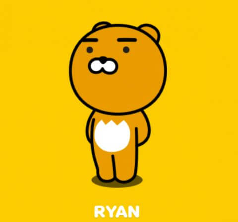

| 圖片 | 人物名稱 | 人物介紹 |
|---|---|---|
|  | 萊恩 |
他不是熊！是一隻沒有鬃毛的獅子呦～！
本來是王位繼承人，但因為沒有鬃毛而放棄王位，選擇離開王國去旅行。 |
| 屁桃 |
原本是果園裡的一顆普通桃子，基因改造發生突變，長出屁股形狀。
因為不想被吃掉，逃離果園展開冒險。 |
|

|
春植 |
萊恩的寵物，一隻小橘貓～身體圓滾滾，標誌是那雙無辜的眼睛。
有一天萊恩在外面偶遇的小流浪貓，因為牠太可愛，決定帶回家。 |